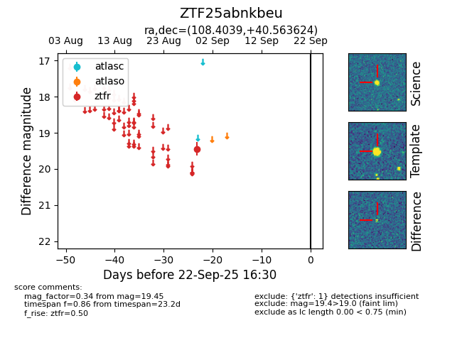

FINK: ZTF25abnkbeu
Lasair: ZTF25abnkbeu
ALeRCE: ZTF25abnkbeu
ZTF25abnkbeu (ztf,fink)
equatorial (ra, dec) = (108.4039,+40.56362)
galactic (l, b) = (177.1347,+21.21366)

last ztfr=19.45
1 ztfr detections